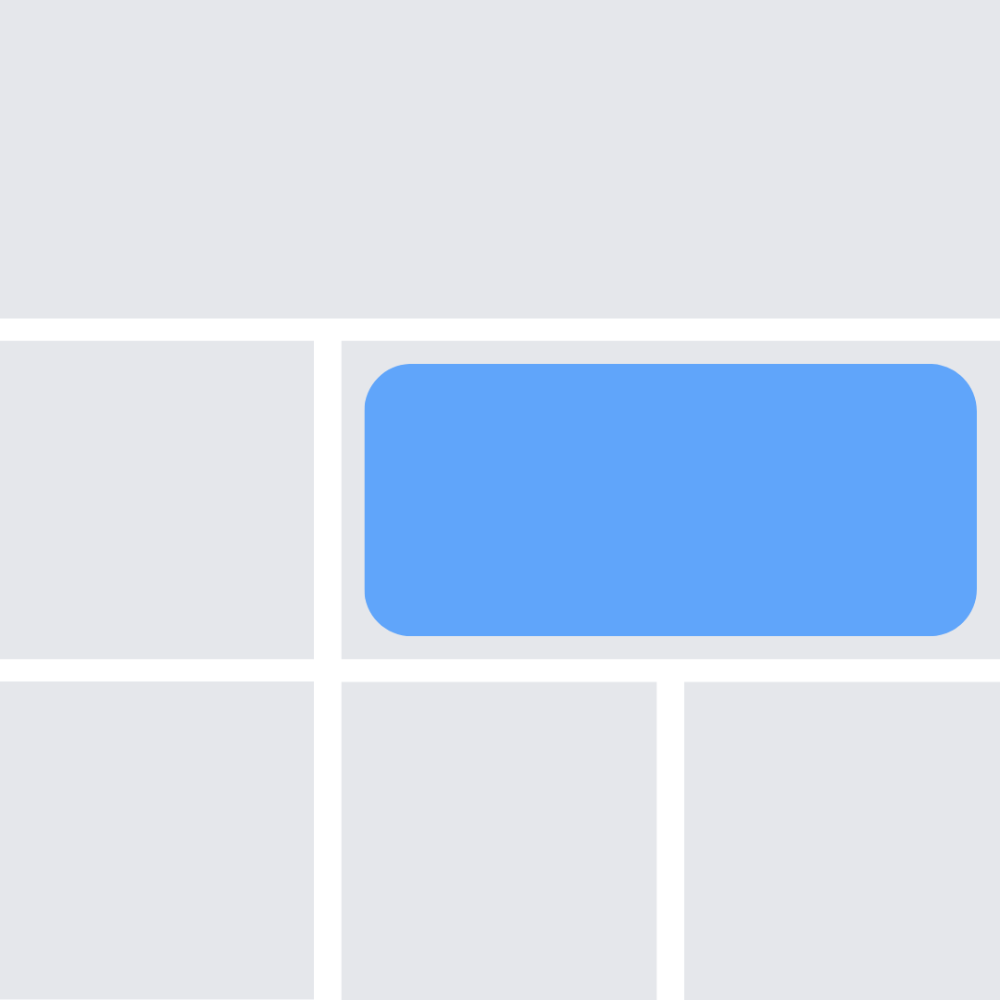
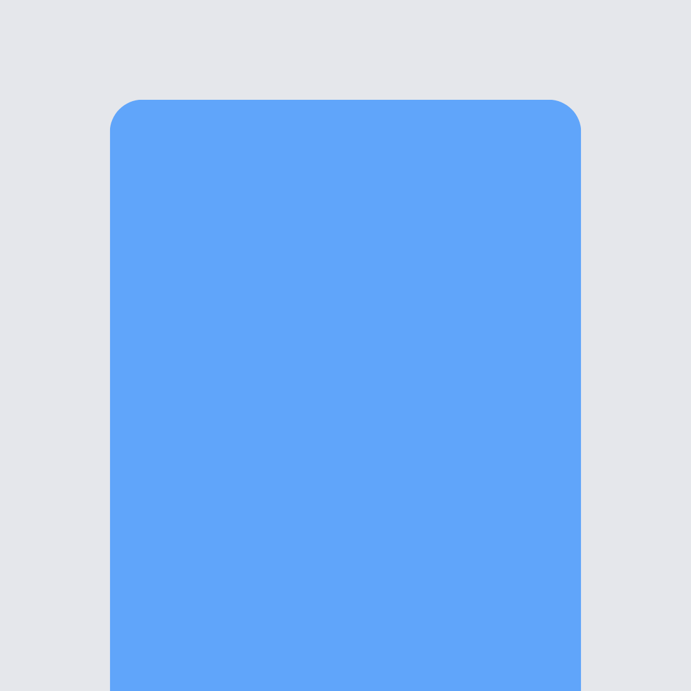

Intro Bar
Select form type
what kind of form would you like to create?

Embeded Form
Create a form to embed
on your website

Landing Page
Create a landing page
with a form

Popup Form
Add a form that pops
up as box